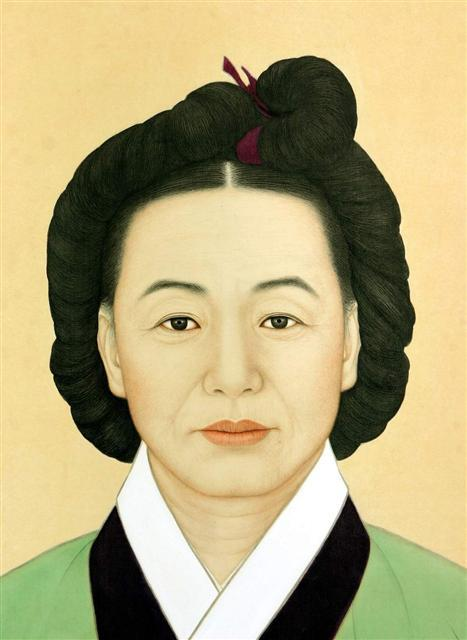

18세기 ~ 19세기 위인

김만덕 (金萬德)
- 시대
- 18C ~ 19C
- 출생 및
사망 - 출생 > 1739년
사망 > 1812 - 업적 요약
- 제주도에 기근이 닥치자 전 재산을 풀어 제주도 백성들을 구휼하였다.
- 업적 상세
-
김만덕은 재물을 모으는데 능하여서 상인으로 활동하며 많은 재산을 축적하였다.
그녀는 배를 만들어 육지와 미곡을 무역했고, 이 과정에서 상당한 이득을 취하였다.
이는 물가의 변동을 잘 파악하여 적절한 시기에 물건을 사고팔았던 상인으로서의 능력이 있었기에 가능한 일이었다.
김만덕은 정조대 제주도에 극심한 흉년이 들었을 때 재산을 털어 백성들을 구휼하였다.
제주도는 흉년에 취약한 지역으로 1790년 이래 흉년과 태풍의 피해가 컸고, 많은 백성들이 굶어 죽었다.
1794년에는 바람과 해수로 인한 피해를 크게 입자, 제주목사가 조정에 구휼미 2만 섬을 요청하기도 하였다.
당시 흉년은 100여 년 만에 있을 정도의 큰 재변이라 할 만큼 참혹하였다.
1795년 조정에서는 5천 섬의 구휼미를 제주도로 내려보냈으나, 쌀을 실은 배 12척 가운데 5척이 난파당하는 피해가 발생하였다.
이때 김만덕은 육지의 곡식을 사서 제주도 백성들을 구휼하는 자선을 베풀었다.
또한 김만덕은 1천금을 내놓아 배를 마련하고 육지로 건너가 연해의 곡식을 사들여 친척들과 은혜를 입은 사람들을 도와준 후, 나머지를 모두 관아로 보내어 굶어 죽어가는 백성들을 도와주도록 하였다.
그녀의 선행이 조정에 보고되자, 정조는 그녀의 소원인 금강산 유람을 허락해 주었다.
그 당시 제주도민들은 제주도를 떠날 수 없었다.
이때 김만덕은 한양의 대궐을 구경하고 싶다는 소원도 부탁하였는데, 평민 여성이 대궐에 들어가는 것도 당시로서는 불가능한 일이었다.
정조는 김만덕의 소원을 들어주기 위해 그녀를 내의원 ‘차비대령 행수의녀’라는 임시 직책을 하사하여 그가 무사히 한양으로 올 수 있게 하였다.
정조는 당시 과거시험에 ‘만덕전’을 주제로 하여 시험을 치르도록 하였다.
김만덕은 이듬해 봄까지 한양에서 지내다가 금강산으로 가서 명승지를 두루 구경하고 제주도로 돌아왔다.
사후 한 달 뒤에 ‘구묘비문(舊墓碑文)’이 세워졌다.